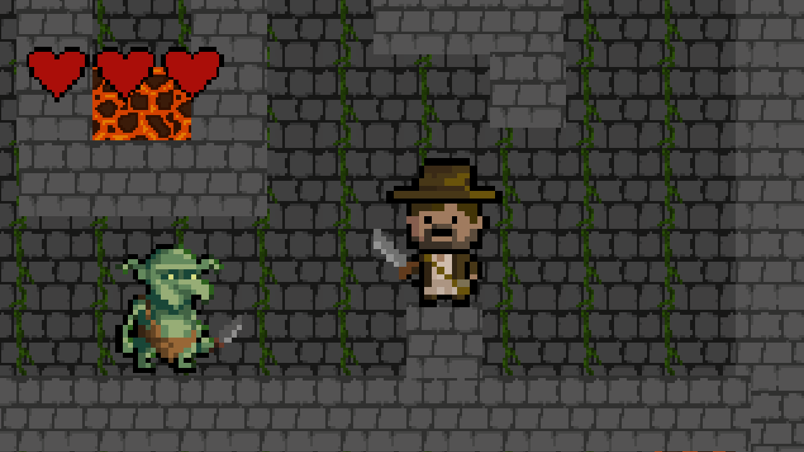

Dungeon Explorer
Jeu vidéo / Projet scolaire / Personnel
Jeu vidéo / Projet scolaire / Personnel

Dans ce jeu, le joueur incarne un aventurier explorant un donjon rempli de dangers tels que des gobelins et des zones de lave.
Ce projet avait pour objectif de tester le moteur Construct 3 dans le cadre de mon cours de création de jeux vidéo Digi Activity.
J'ai développé le système de déplacement, le système d'attaque du joueur et des ennemis, la gestion de la vie et des conditions de mort, ainsi que le level design. J'ai également créé un main menu.